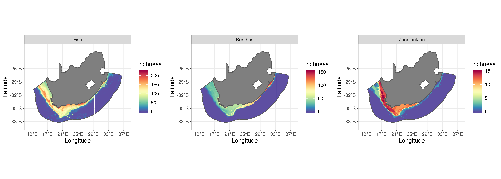

Use of openly available occurrence data to generate biodiversity map within the EEZ of South Africa
Dawit Yemane
2019-12-12 14:30:52
1 Abstract
Biodiversity maps are one of important components of conservation and ecosystem aware spatial management strategy. Biodiversity maps in the past are largely obtained based on patchy occurrence data from a range of sources. Currently substantial amount of occurrence data are readily available for large part of the of the world and can usually be accessed progamatically. Considering observed, and expected changes in response to future climate change, in species distribution and hence the biodiversity it is important to make use of these readily available occurrence data of many species and construct biodiversity maps. This study aimed to generate overall biodiversisty for three generic functional groups: zooplankton, fishes, and benthos within the EEZ of South Africa. This was achieved by stacking individual species distribution maps by modelling the distribution of all most of the species with all known occurrence records within the EEZ. Freely available occurrence data from obis was accessed for this purpose. An ensemble species distribution modelling was applied based on five widely applied statistical methods to generate indvidual species distribution. The result of this study the potential values of opensource occurrence and environmental data to generate biodiversity maps that can potentially be used in future spatial management planning and in the study of the potential influence of environmental change, includig climate variability and change, on the biodiversity of ecosystems.
2 Introduction
Mapping of biodiversity (species richness / -diversity) and understanding of the biological, environmental and evolutionary processes that regulate local and regional species distributions, are of importance for understanding biodiversity patterns and for biodiversity management and conservation. This is particularly so because future changes (and variability) in climate are expected to affect the distributions of species and hence biodiversity patterns. In addition biodiversity maps and indices are important inputs for spatial management planning, such as the development of area-based conservation measures. Globally there is increased work on documentation and characterization of spatial (and when possible temporal) patterns in biodiversity for various spatial domains, including for coastal or near-shore areas (e.g South Africa - Turpie et al., 2000; Awad et al., 2002; Griffiths et al., 2010), at the scale of the whole-basin (e.g Mediterranean sea - Coll et al., 2012), or Large Marine Ecosystems (Benguela Current Large Marine Ecosystem - Kirkman et al., 2013, 2016) and globally (e.g Briggs and Bowen, 2012).
Mainland South Africa has an Exclusive Economic Zone EEZ of 1072679. The total numbers of marine species (across all taxonomic groups) recorded for South African waters is at least 12914, although smaller size species are under-represented (Griffiths et al., 2010) and this was largely based on surveys of coastal, near-shore and shelf areas. The EEZ provides a range of goods and services for South Africans: it supports diverse groups of marine organisms, a wide range of which are targeted by various fishing sectors, minerals and fossil fuels that are extracted by the mining and oil and gas industries, as well opportunity for aquaculture, recreation and tourism and other activities. Globally, escalating human activity, both extractive and non-extractive, associated with increased human demand and competition for ocean space and ocean products in recent times (e.g. Halpern et al., 2015) is resulting in habitat degradation, species extinctions, ultimately compromising ecosystem service delivery (Carpenter et al., 2006; Eichbaum et al., 1996; McCauley et al., 2015; Worm et al., 2006). In South Africa, to reduce or mitigate such effects, spatial management measures are among the approaches that have been put forward to reduce or mitigate for such effects, including marine spatial planning (MSP) informed by descriptions of Ecologically or Biologically Significant Areas (EBSAs) (Kirkman et al., 2016, 2019) and expanding the national coverage of marine protected areas (MPA) from less than 0.5% of the mainland EEZ to approximately 5%, through the development of an expanded network that is representative of nearly all ecosystem types, including offshore ecosystems (Sink, 2016; South Africa, 2010). Critical input for these approaches included spatialized layers representing habitat features, ecosystem types, ecological processes as well as biodiversity distributions and patterns (Holness et al., 2014; Sink et al., 2011). Absence of synthetic biodiversity maps precluded their inclusion in previous marine spatial planning. Currently occurrence data for about 120000 marine species, ranging from bacteria to whales, and covering all parts of the ocean from the surface to bottom, is collated and made readily available from Ocean Biogeographic Information System (OBIS). This data has been used in biodiversity and biogeography studies (Selig et al., 2014; Tittensor et al., 2010). This openly available occurrence data can, for example, be used to study distribution pattern of selected species or all species within a pre-defined region and then stacked to generate biodiversity maps.
Traditionally bioidiversity maps are generated by aggregating occurrence points in a grid (Roberts et al., 2002). The main advantage of this approach is that there is no need for extrapolation but only provides picture of biodiversity at a coarser spatial resoultion and tends to be less accurate as one looks at finer resolution as they are mostly based on patchy records (Schmitt et al., 2017). Biodiversity maps are also generated from macro-ecological models where site/station/quadrat level species richness are linked to environmental variables and richness modelled using range of statistical models (Ferrier and Guisan, 2006). The increase in the amount of readily available, for many species, occurrence data led to the use of individual species distribution modelling to generate biodiviversity maps,generally referred to as stacking whereby individual species distribution maps are stacked to produce biodiversity maps. This used to be typically done by simply summing binary distribution maps or summing probability of occurrences of individual species (D’Amen et al., 2015) here refferred to as stacking binaries and stacking probabilities.
This study will be the first in providing comprhensive view of biodiversty within the EEZ of South Africa and across three major functional groups and solely based freely available opensoure data. The objective of this study is two fold 1) demonstration of the value open source occurrence data with potential uses in biodiversity and conservation (or spatial management) work 2) to generate biodiversity maps for selected broad functional groups by stacking individual species distribution maps.
3 Methods
All of the data used in this study were obtained from opensource data repositories and were programmatically retrieved and processed using R (R Core Team, 2019). Two main repositories were relied upon to obtain the environmental layer and occurrence data: OBIS http://iobis.org/ for occurence data, GEBCO https://www.gebco.net/ for bathymetry data, Bio-ORACLE http://www.bio-oracle.org/ for the environmental layer. The broad functional group clasification of the taxons into zooplankton, benthos, and fishes was achieved with the help of trait data from WoRMS http://www.marinespecies.org/. Schematics of the all the steps from accessing and processing of raw data, and modelling distribuion up to the construction of biodiversity maps are shown in Figure 1.
 Figure 1: Schematic showing the process of generating biodiversity maps in this study, including all steps from accessing of occurrence and environmental data to the generation of maps. EEZ – referring to the EEZ of South Africa; SDM - Species Distribution Model; CTA – Classification Tree Analysis; RF - Random Forest; MARS – Multivariate Adaptive Regression Analysis; ANN – Artificial Neural Network; GLM – Generalized Linear Model; AUC – Area Under Curve of the Receiver Operating Characteristic (ROC) curve.
Figure 1: Schematic showing the process of generating biodiversity maps in this study, including all steps from accessing of occurrence and environmental data to the generation of maps. EEZ – referring to the EEZ of South Africa; SDM - Species Distribution Model; CTA – Classification Tree Analysis; RF - Random Forest; MARS – Multivariate Adaptive Regression Analysis; ANN – Artificial Neural Network; GLM – Generalized Linear Model; AUC – Area Under Curve of the Receiver Operating Characteristic (ROC) curve.
Map of the study region, EEZ of South Africa, is shown in Figure 2.
 Figure 2: Map of the study region delineating the EEZ of South Africa.
Figure 2: Map of the study region delineating the EEZ of South Africa.
3.1 Data: environmental
All environmental layers used for species distributions were obatained from Bio-ORACLE. Currently Bio-ORACLE provides spatial layers (in two different formats: ESRI shape files and geoTIFF) for 18 environmental variables that can, and are known to, influence species distributions (Assis et al., 2018). In addtion all or selected layers can be retrieved directly from within R using the sdmpredictors (Bosch, 2018) package. The environmental layers retrieved from Bio-ORACLE were provided at 5 arcmin ( or \(\sim 9.2km\)). Environmental layers are provided for the present condition (2000-2014), obtained from pre-processed global ocean re-analysis data, (combining satellite remote sensing and in-situ observations), and future (2040-2050 and 2090-2100) from Atmosphere-Ocean General Circulation Models AOGCMs made available by Coupled Model Inter-comparison Project CMIP (Assis et al., 2018). For the current study only layers for present conditions were considered.
Multicollinearity is an important problem for most regression models thus it is important to check for it among the environmental variables used in this study. In this study the existence and pervasiveness of multi-collinearity in the predictor variables was checked by calculating variance inflation factor vif and it takes the following form: \[ VIF_{j} = \frac{1}{(1-R^{2}_{(j)})} \] where \(R^{2}_{(j)}\) is the coefficient of determination obtained by regressing the jth variable against all the other variables. A variable that is un-correlated with all the other variables will have \(VIF = 1\). In this study variables with \(VIF>5\) were excluded from the predictor variable sets as it was the recommended threshold above which multi-collinearity can be a problem (Montgomery et al., 2012).
Figure 3 shows climatolgy for the selected environmental variable, summarizing the present state in environmental condition, used to model species distribution. As can be seen the major and large scale hydrographic features off the coast of South Africa are captured (e.g. the high near shore surface chlorphyll that characterize the Southern Benguela, the cool shelf and near shore region characterizing west coast and the warm Agulhas current signature on south coast Jury, 2012)
 Figure 3: Environmental layers used for species distrbution modelling. bottom depth (\(meters\)), bottom dissolved oxygen (\(mmol. m^{-3}\)), bottom dissolved iron (\(mmol. m^{-3}\)), bottom light intensity (\(E. m^{2}. yr^{-1}\)) [in log space] zeros color coded as ‘gray’, bottom primary prodcutivity (\(g. m^{-3}. day^{-1}\)) [in log space], bottom salinity (\(PSS\)), bottom topographic roughness TRI (\(meters\)), surface chlorophyll (\(mg. m^{-3}\)) [in log space], surface salinity (\(PSS\)), surface silicate (\(mmol. m^{-3}\)),surface tempertature (\(^\circ C\))
Figure 3: Environmental layers used for species distrbution modelling. bottom depth (\(meters\)), bottom dissolved oxygen (\(mmol. m^{-3}\)), bottom dissolved iron (\(mmol. m^{-3}\)), bottom light intensity (\(E. m^{2}. yr^{-1}\)) [in log space] zeros color coded as ‘gray’, bottom primary prodcutivity (\(g. m^{-3}. day^{-1}\)) [in log space], bottom salinity (\(PSS\)), bottom topographic roughness TRI (\(meters\)), surface chlorophyll (\(mg. m^{-3}\)) [in log space], surface salinity (\(PSS\)), surface silicate (\(mmol. m^{-3}\)),surface tempertature (\(^\circ C\))
3.2 Data: occurrence
Currently OBIS is one of the largest global open-source repositories for occurrence data of marine flora and fauna, allowing access to readily usable data that can have a wide range of applications : biodiversity and conservation research, generation and testing of ecological hypotheses, development of biodiversity baselines, biodiversity monitoring, spatial management projects, etc. OBIS currently enables occurrence data and biodiversity maps to be visualised online or retrieved to local hard disk using OBIS’ Application Programming Interface (API) or using an R package designed for this purpose robis (Provoost and Bosch, 2019). The occurrence data used in this study was extracted for the Benguela Current Large Marine Ecosystem (BCLME) which was then subsetted to the EEZ of South Africa.
Only occurrence data obtained after the mid-1980s were considered. In addition the data were split into broad functional groups: fishes, including pelagic teleost fishes and sharks that occur between the surface and near the bottom (cephalopods were also included with this group); benthos, including benthic dwelling species; and zooplankton. For each of the three functional groups, species for which there were fewer than 20 records of occurrence over the entire period were excluded from further analysis. A total of 16 species of zooplankton, 185 species of benthos, and 358 species of fishes were considered.
3.3 Models
The variety of statistical models that are used in species distribution modelling and can roughly grouped into two categories: joint species distribution models (JSDMS) where distributions (and/or abundance) of species are modelled jointly (e.g. Zhang et al., 2018; Ovaskainen et al., 2016; Thorson et al., 2016, 2015), and separate species distribution models (SSDMS) (e.g. Shabani et al., 2016; Schmitt et al., 2017) where the distribution of each species is modelled separately. In this study SSDMS are used. Several types of correlative statistical models can be used for SSDMS for the purpose of this study we consider five of them Generalized Linear Model (GLMs) (McCullagh, 2018; Nelder and Wedderburn, 1972), Classification Tree Analysis (CTA) (James et al., 2013), Random forest (RF) (Breiman, 2001; Liaw and Wiener, 2002), Multivariate Adaptive Regression Spline (MARS) (Friedman, 1991; Trevor Hastie and Thomas Lumley’s leaps wrapper., 2018), Artificial Neural Network (ANN) (Venables and Ripley, 2002). Individual occurrence maps of different species were then combined (stacking) to produce biodiversity maps. Both the SSDMS and the stacking of individual distribution maps were performed using the ssdm package (Schmitt et al., 2019).
3.4 Species distribution modelling
Because this study was based on species occurrence data, i.e. the geographic coordinates of locations where the species’ were observed (also known as presence only data) necessitates the generation of pseudo-absences. Distribution modelling based on just occurrence data involves: Gridded spatial domain available for the species of interest and environmental variables layer covering the spatial domain. The assumption here is that the spatial domain is randomly sampled and the observed presences occur proportional to the habitat preference of the species. Most the widely used models do require both presence and absence locations to model the probability of occurrence of the species of interest. In the context of presence only data this requires generation of pseudo-absences (Merow and Silander Jr, 2014) Currently there are four proposed approaches to be used to generate pseudo-absence: 1) randomly generate pseudo absences within the gridded spatial domain available to the species of interest (or the background data); 2) randomly generate pseudo-absences within predefined distance (to be specified by the user) from known presence location; 3) randomly generate pseudo-absence data from regions, within the defined spatial domain, that are environmentally different; and 4) the three step pseudo-absence generation - its main purpose being to constrain the spatial extent and environmental range from which random pseudo-absence locations are generated and it involves a) specify (limiting) the extent of the spatial domain (background area). This was done by evaluating changes in variable importance by conducting PCA of the background environmental data at different distance from presence points (e.g 50km, 100km, 250,…etc). Then the optimal distance to constrain the spatial extent is selected as one above which the contribution of the most important variable to the first PCA decreases or stops increasing b) environmental profiling of the background area whereby environmental similarity is assessed and locations that are the least similar to the presence locations are retained and c) conduct k-means clustering of the background area identified in step b, where k is set to the number of presence location. The centroid from each cluster is assumed to be the good representation of the environmental feature space. The centroids are then projected back to the geographic space provides the coordinates of the pseudo-absence (Senay et al., 2013). In this study the first approach was adopted to generate pseudo-absence and to reduce potential error due to randomisation the procedure was repeated three times.
3.5 Stacking distribution maps
Typically the approaches for stacking individual species distribution maps to produce biodiversity maps have been to simply sum either the binary distribution maps or the probabilities of occurrences of the various individual species (D’Amen et al., 2015). These approaches shall be here referred to as ‘stacking binaries’ and ‘stacking probabilities’, respectively. While the stacking of individual species distributions has been used widely, prevailing criticism that is especially applicable for stacking binaries is the tendency to over-predict local species richness. This tendency for over-prediction could be interpreted to result from the fact that it is assumed for this approach that only abiotic filters influence local species richness when in reality, at least at a short time scale, both biotic and abiotic filters are known to operate (D’Amen et al., 2015). However, Calabrese et al. (2014) showed that stacking binaries almost always tends to over-estimate local species richness because of the mathematical artefact of thresholding probability of occurrence to binary occurrence. Thus to address the issue of over-estimation of local species richness some alternative approaches have been suggested, namely to adjust predicted species richness using linear regression (Calabrese et al., 2014), referred to here as the “regression method”, or to constrain species richness to the observed species richness, whereby predicted species richness is adjusted by probability ranking (D’Amen et al., 2015), referred to here as the “probability ranking method”. In this study, the regression method was used to adjust the distribution maps before stacking. The approach is to adjust the probability of occurrence of each species at a site based on the richness at each site such that the adjusted probability of occurrence should provide accurate information about community composition (Calabrese et al., 2014). Modified application of the regresion method as implemented in the ssdm package (Schmitt et al., 2017, 2019) is given below:
\[ S_{obs}^{i}= a+bS_{raw}^{i} \] where \(S_{obs}^{i}\) is observed species richness in site \(i\), \(S_{raw}^{i}\) raw species richness obtained by stacking binaries, \(a\) and \(b\) are estimated intercept and slope. Then the adjust richness map is obtained as follows:
\[ \widehat{S_{adj}^{i}} = a +bS_{raw}^{i} \]
where \(\widehat{S_{adj}^{i}}\) is the adjusted species richness in site \(i\), \(a\) and \(b\) are esimtated regression coefficients estimated above.
4 Results
The relative influence of all the predictors on the distribution of each of the species was assessed. To assess if there exist commonlaity in the influence of the environmental variables on the distribution with each of the three functional groups the frequency of the ranked importance, 9 - most important to 1 - least improtant, of each variables is summarised in Figure 4. Bottom temperature, bottom depth, and surface temperature were relatively consistently important influencing the distribution of most of the benthic species and hence their diversity. For fishes on the other hand with the exception of bottom depth, which appear to influence most species distribution, the various environmetal variables influenced distribution of fishes, and hence the overall diversity, to different extent. Zooplanlnktons distribution and the overall diversity was often influenced by surface temperature and bottom depth and to a moderate extent by surface chlorophyll, bottom chlorophyll, and surfac salinity.
Figure 4: Summary of the relative influence of the environmental variables across speciess within each of the three functional groups.
Biodivesity maps, based on the combined data after the mid 1980s, for zooplnankton, benthos, and fishes is shown in Figure 5. Diversity of fishes on the west coast was the highest on the shelf-edge/slope region and nearshore areas from around Saint Helena Bay east ward. On the south coast fish diveristy was highest in nearshore area and on the Agulhas bank. Benthos diversity was the higher in nearshore area with highest off the cape peninsula and off the east coast more pronounced off the Kwa-zulu Natal coast. Benthos species richnness was generally moderate to low. Diversity of zooplankton was on both west and south coast extending from the coast to shelf/shelf-edge and slope region.
Figure 5: Overall pattern in biodiversity of zooplankton, benthos, and fishes based. Species distribtion maps combined to generate biodiversity based on the regression method.
5 Discussion
Lack of availability and insufficient taxonomic and spatial coverage of biodiversity data is one of the main constraint to better understand process and/or factors regulating biodiversity, to manage and conserve based on sound scientific methods. This problems do vary from region to region (or from one country to another country). Thus OBIS was meant to help address this major gap by collating spatio-temporal occurrence data from wide range of sources for the whole globe and going back in time as far as the available data allows. The result from this study shows the potential uses of occurrence data from OBIS to generate biodiversity maps for three major functional groups that could potentially be used in future conservation or spatial management projects and study of ecosystem structure and functioning. The potential values of biodiversity maps for conservation and systematic spatial planning can be seen in the work of Sink et al. (2011) and Grantham et al. (2011), as part of the national project on offshore marine protected areas. In both of the above cases the important of the biodiversity data, either for selected groups or for the whole system is higlighted and to a large extent index of diversity (sepecifically species richness) were obatained by aggregatig occurrence points in a grid. The main limitation of the grid based approach to generate maps of biodiversity is that they tend to be only useful at coarser spatial scale thus the results of this is expected to fill the gap in fine scale biodiversity maps for three major functional groups.
There are previous works off the coast of South Africa in the studying species composition and community strucure, mostly restricted between the nearshore and the shelf/shelf-edge regions but none looked at the spatial pattern in biodiversity across multiple functional groups and at the scale of the whole EEZ as done in this study. Some of the works on species composition/community structure, prsented by groups, include: demersal fishes communtity structure (Atkinson et al., 2011), biomass and production of zooplankton (Huggett et al., 2009), biodiversity/species richness of demersal fishes (Kirkman et al., 2013; Yemane et al., 2010, 2015). Pattern in biodivesity, either overall or by taxonomic groups, and factors regulating them has been studied widely and a range of hypothesis have been put forward e.g in the context of latitudinal pattern in diversity (Willig et al., 2003); characterization of patterns in biodiversity, identification of physical and envionmental conditions shaping pattern in diversity (Kirkman et al., 2013); relationship of diversity to ecosystem stability, resilience and functioning (Beaumont et al., 2007; O. Gessner et al., 2004). It has been shown in a range of studies (including those listed above) that spatial structure of fish communities is strongly structured by depth, serving as proxy for a range of physiologically and ecologically important factors (or processes). The result of this study also hilights the important influence of depth, followed by bottom temperature, on the distribution and hence the diversity of fishes. Areas of high fish diversity on the west coast, also identified as such in (Grantham et al., 2011; Kirkman et al., 2013; Yemane et al., 2015), are associated with shlelf-edge or slope regions. These area are aso characterized by higher demersal fishing effort as the work of Fairweather et al. (2006) shows. These areas of high fish diversity are also slightly offshore areas of high biomass and production of zooplanktons (Huggett et al., 2009). On the South coast areas of high-diversity were in the shallower areas closer to the coast and mid-shelf on the Agulhas bank. The near shore and shelf areas of the southern benguela upwelling system is generally characterised by high zooplankton production and biomass (Grantham et al., 2011; Huggett et al., 2009) but the result of this study, although there are fewer zooplankton species, shows that most of these areas are also characteriized by relatively high zooplankton diversity. The most common factor affecting distribution and hence diversity of zooplanktons were bottom depth and surface temperature, work on the factors influencing the diversity of zooplankton in the Gulf of Maine shows that bathymetry, proximity to coast, and advection were important (Johnson et al., 2011). Regions of high benthic diversity are restrictd to shallower water/nearshore area and on the east coast. The distribution of benthos and hence their diversity was mostly influenced by bottom depth, botttom and surface temperature. Bottom depth has been shown to influence the diversity of marine benthos (e.g A continental scale study on pattern of biodiversity of marine benthos Renaud et al., 2009; environmental infuence of seabed diversity using tropical North East Australia, deep Gulf of Mexico, temperate Gulf of Maine as case studies Roland Pitcher et al., 2012).
Documentation, characterization and identificaion of pattern in biodiversity or their surrogates, when no direct measure is available, is an important component of conservation planning. This is largely due to known and expected impacts of loss of biodiversity on goods and services that ecosystems provide (Hooper et al., 2012; Worm et al., 2006). The work of Worm et al. (2006) also shows the potential values of restoring biodiversity.
The work of Molinos et al. (2016) shows the potential for future reogranization of spatial pattteren in biodiversity largely driven by chanages in distribution rather than loss of species. Hilighting the need to understand of the current spatial pattern in biodiversity and potential future reorgnaizations to develop an adaptive conservation (or spatial management) approach that take into acount these expected changes.
6 Appendix
6.1 Appendix A
Raw biodiversity (species richness) maps for each of the three functional groups compiled by 20-years, except for the early and present period. For the earliest period all occurrence data prior to the 1900 were lumped to construct the biodiversity maps. Similarly the biodiversity maps for the present periods all the data after the 2000s were combined to construct biodiversity maps. Occurrence of each of the species in a functional groups were aggregated in a grid with 100X100 resolution to generate the species richness by grid cell. The biodiversity maps for zooplankton, fishes, and benthos are presented in figures Figure 6, Figure 7, and Figure 8 respectively. For all the three groups for the earlier periods prior to the 1980s, samples were not limited to nearshore/coastal area and in fact were scattered throughout the EEZ. The highest concentration of samples were collected during the 1980-2000 period but they were almost exclusively tied to the continental shelf or slope region upto a depth of 1000m. For zooplankton areas from nearshore/coastal to shelf/slope regions on both the west and south coast were characterized by the highest richness. For benthos high richness were observed in nearshore/coastal areas and on the east coast. For fishes high species richness were observed on the shelf and slope region on the west coast but nearshore to slope region on the east coast.
 Figure 6: Zooplankton: summary of the distribution of sampling activity, and pattern in species richness, in the different periods.
Figure 6: Zooplankton: summary of the distribution of sampling activity, and pattern in species richness, in the different periods.
 Figure 7: Fishes: summary of the distribution of sampling activity, and pattern in species richness, in the different the periods.
Figure 7: Fishes: summary of the distribution of sampling activity, and pattern in species richness, in the different the periods.
 Figure 8: Benthos: summary of the distribution of sampling activity, and pattern in species richness, in the different periods.
Figure 8: Benthos: summary of the distribution of sampling activity, and pattern in species richness, in the different periods.
6.2 Appendix B
For sake of completion and to serve as comparison to the biodiversity maps presented in the result section biodiversity maps constructed by stacking binaries and stacking probability are presented below. Biodiversity maps for the three functional groups, zooplankton, benthos, and fishes, obtained using two alternative methods: stacking binaries and stacking probabilities are shown in Figure 9: Overall pattern in biodiversity of zooplankton, benthos, and fishes based. Species distribtion maps combined to generate biodiversity based on stacking binaries method. and Figure 10 respectively.
 Figure 9: Overall pattern in biodiversity of zooplankton, benthos, and fishes based. Species distribtion maps combined to generate biodiversity based on stacking binaries method.
Figure 10: Overall pattern in biodiversity of zooplankton, benthos, and fishes based. Species distribtion maps combined to generate biodiversity based on stacking probabilities method.
6.3 Appendix C
Distribution maps of selected of species from the three functional groups with observed occurrence data are presented below. For selected sets of fish, benthos, and zooplankton distribution maps overlayed with the known occurrence are shown below in Figure 11 and Figure 12 for fishes, Figure 13 and Figure 14 for benthos, and Figure 15 and Figure 16 for zooplankton.
 Figure 11: Fish: Sample distribution maps for selected species. Open circles denote location of known presence. Group 1
Figure 11: Fish: Sample distribution maps for selected species. Open circles denote location of known presence. Group 1
 Figure 12: Fish: Sample distribution maps for selected species. Open circles denote location of known presence. Group 2
Figure 12: Fish: Sample distribution maps for selected species. Open circles denote location of known presence. Group 2
 Figure 13: Benthos: Sample distribution maps for selected species. Open circles denote location of known presence. Group 1
Figure 13: Benthos: Sample distribution maps for selected species. Open circles denote location of known presence. Group 1
 Figure 14: Benthos: Sample distribution maps for selected species. Open circles denote location of known presence. Group 2
Figure 14: Benthos: Sample distribution maps for selected species. Open circles denote location of known presence. Group 2
 Figure 15: Zooplankton: Distribution maps. Open circles denote location of known presence. Group 1
Figure 15: Zooplankton: Distribution maps. Open circles denote location of known presence. Group 1
 Figure 16: Zooplankton: Distribution maps. Open circles denote location of known presence. Group 2
Figure 16: Zooplankton: Distribution maps. Open circles denote location of known presence. Group 2
6.4 Appendix D
species richness by selected classes: Actinopterygii, Cephalopoda, Elasmobranchii. These classes generally made up 98% of the species modelled Figure 17.
Figure 17: Pattern in biodiversity for the three major classes Actinoptergyii, Cephalopoda, Elasmobranchii.
#Session information
#Here is the R Session for this analysis
sessionInfo()
## R version 3.6.1 (2019-07-05)
## Platform: x86_64-pc-linux-gnu (64-bit)
## Running under: Ubuntu 18.04.3 LTS
##
## Matrix products: default
## BLAS: /usr/lib/x86_64-linux-gnu/openblas/libblas.so.3
## LAPACK: /usr/lib/x86_64-linux-gnu/libopenblasp-r0.2.20.so
##
## locale:
## [1] LC_CTYPE=en_ZA.UTF-8 LC_NUMERIC=C
## [3] LC_TIME=en_ZA.UTF-8 LC_COLLATE=en_ZA.UTF-8
## [5] LC_MONETARY=en_ZA.UTF-8 LC_MESSAGES=en_ZA.UTF-8
## [7] LC_PAPER=en_ZA.UTF-8 LC_NAME=C
## [9] LC_ADDRESS=C LC_TELEPHONE=C
## [11] LC_MEASUREMENT=en_ZA.UTF-8 LC_IDENTIFICATION=C
##
## attached base packages:
## [1] grid stats graphics grDevices utils datasets methods
## [8] base
##
## other attached packages:
## [1] ggsn_0.5.3 ggrepel_0.8.1 automap_1.0-14
## [4] sf_0.8-0 raster_3.0-7 sp_1.3-1
## [7] kableExtra_1.1.0 flextable_0.5.5 fields_9.8-3
## [10] maps_3.3.0 spam_2.2-2 dotCall64_1.0-0
## [13] xtable_1.8-4 broom_0.5.2 magrittr_1.5
## [16] captioner_2.2.3 reshape_0.8.8 forcats_0.4.0
## [19] stringr_1.4.0 dplyr_0.8.3 purrr_0.3.2
## [22] readr_1.3.1 tidyr_1.0.0.9000 tibble_2.1.3
## [25] ggplot2_3.2.1 tidyverse_1.2.1.9000 knitr_1.25
##
## loaded via a namespace (and not attached):
## [1] readxl_1.3.1 uuid_0.1-2 backports_1.1.5
## [4] plyr_1.8.4 lazyeval_0.2.2 shinydashboard_0.7.1
## [7] splines_3.6.1 SSDM_0.2.6 gstat_2.0-2
## [10] digest_0.6.21 htmltools_0.3.6 earth_5.1.1
## [13] gdata_2.18.0 modelr_0.1.5 R.utils_2.9.0
## [16] officer_0.3.5 xts_0.11-2 jpeg_0.1-8
## [19] colorspace_1.4-1 rvest_0.3.4 rgdal_1.4-8
## [22] haven_2.1.1 xfun_0.9 crayon_1.3.4
## [25] jsonlite_1.6 zeallot_0.1.0 survival_2.44-1.1
## [28] zoo_1.8-6 glue_1.3.1 gtable_0.3.0
## [31] webshot_0.5.1 scales_1.0.0 DBI_1.0.0
## [34] Rcpp_1.0.3 plotrix_3.7-6 viridisLite_0.3.0
## [37] units_0.6-5 foreign_0.8-72 SDMTools_1.1-221.1
## [40] Formula_1.2-3 intervals_0.15.1 dismo_1.1-4
## [43] httr_1.4.1 RColorBrewer_1.1-2 FNN_1.1.3
## [46] gplots_3.0.1.1 pkgconfig_2.0.3 R.methodsS3_1.7.1
## [49] nnet_7.3-12 dbplyr_1.4.2 here_0.1
## [52] labeling_0.3 tidyselect_0.2.5 rlang_0.4.0
## [55] later_0.8.0 munsell_0.5.0 TeachingDemos_2.10
## [58] cellranger_1.1.0 tools_3.6.1 cli_1.1.0
## [61] generics_0.0.2 ggmap_3.0.0 evaluate_0.14
## [64] yaml_2.2.0 fs_1.3.1 zip_2.0.3
## [67] spThin_0.1.0.1 caTools_1.17.1.2 randomForest_4.6-14
## [70] RgoogleMaps_1.4.4 nlme_3.1-141 mime_0.7
## [73] R.oo_1.22.0 xml2_1.2.2 compiler_3.6.1
## [76] rstudioapi_0.10 png_0.1-7 e1071_1.7-3
## [79] reprex_0.3.0 spacetime_1.2-2 stringi_1.4.3
## [82] plotmo_3.5.5 gdtools_0.1.9 lattice_0.20-38
## [85] Matrix_1.2-17 classInt_0.4-2 gbm_2.1.5
## [88] vctrs_0.2.0 pillar_1.4.2 lifecycle_0.1.0
## [91] data.table_1.12.2 bitops_1.0-6 maptools_0.9-5
## [94] httpuv_1.5.1 R6_2.4.0 promises_1.0.1
## [97] KernSmooth_2.23-15 gridExtra_2.3 codetools_0.2-16
## [100] gtools_3.8.1 assertthat_0.2.1 rprojroot_1.3-2
## [103] rjson_0.2.20 withr_2.1.2 mgcv_1.8-28
## [106] hms_0.5.1 rpart_4.1-15 class_7.3-15
## [109] rmarkdown_1.15 shiny_1.3.2 lubridate_1.7.4
## [112] base64enc_0.1-3#References
Assis, J., Tyberghein, L., Bosch, S., Verbruggen, H., Serrão, E. A., and De Clerck, O. 2018. Bio-oracle v2. 0: Extending marine data layers for bioclimatic modelling. Global Ecology and Biogeography, 27: 277–284. Wiley Online Library.
Atkinson, L., Leslie, R., Field, J., and Jarre, A. 2011. Changes in demersal fish assemblages on the west coast of south africa, 1986–2009. African Journal of Marine Science, 33: 157–170. Taylor & Francis.
Awad, A. A., Griffiths, C. L., and Turpie, J. K. 2002. Distribution of south african marine benthic invertebrates applied to the selection of priority conservation areas. Diversity and Distributions, 8: 129–145. Wiley Online Library.
Beaumont, N., Austen, M., Atkins, J., Burdon, D., Degraer, S., Dentinho, T., and Derous, S. et al. 2007. Identification, definition and quantification of goods and services provided by marine biodiversity: Implications for the ecosystem approach. Marine pollution bulletin, 54: 253–265. Elsevier.
Bosch, S. 2018. Sdmpredictors: Species distribution modelling predictor datasets. https://CRAN.R-project.org/package=sdmpredictors.
Breiman, L. 2001. Random forests. Machine learning, 45: 5–32. Springer.
Briggs, J. C., and Bowen, B. W. 2012. A realignment of marine biogeographic provinces with particular reference to fish distributions. Journal of Biogeography, 39: 12–30. Wiley Online Library.
Calabrese, J. M., Certain, G., Kraan, C., and Dormann, C. F. 2014. Stacking species distribution models and adjusting bias by linking them to macroecological models. Global Ecology and Biogeography, 23: 99–112. Wiley Online Library.
Carpenter, S. R., Bennett, E. M., and Peterson, G. D. 2006. Scenarios for ecosystem services: An overview. Ecology and Society, 11. JSTOR.
Coll, M., Piroddi, C., Albouy, C., Ben Rais Lasram, F., Cheung, W. W., Christensen, V., and Karpouzi, V. S. et al. 2012. The mediterranean sea under siege: Spatial overlap between marine biodiversity, cumulative threats and marine reserves. Global Ecology and Biogeography, 21: 465–480. Wiley Online Library.
D’Amen, M., Dubuis, A., Fernandes, R. F., Pottier, J., Pellissier, L., and Guisan, A. 2015. Using species richness and functional traits predictions to constrain assemblage predictions from stacked species distribution models. Journal of biogeography, 42: 1255–1266. Wiley Online Library.
Eichbaum, W., Crosby, M., Agardy, M., and Laskin, S. 1996. The role of marine and coastal protected areas in the conservation and sustainable use of biological diversity. Oceanography, 9: 60–70. JSTOR.
Fairweather, T., Booth, A., Sauer, W., and Leslie, R. 2006. Spatial description of hake-directed fishing activity off the west coast of south africa. African Journal of Marine Science, 28: 13–24. Taylor & Francis.
Ferrier, S., and Guisan, A. 2006. Spatial modelling of biodiversity at the community level. Journal of applied ecology, 43: 393–404. Wiley Online Library.
Friedman, J. H. 1991. Multivariate adaptive regression splines. The annals of statistics: 1–67. JSTOR.
Grantham, H. S., Game, E. T., Lombard, A. T., Hobday, A. J., Richardson, A. J., Beckley, L. E., and Pressey, R. L. et al. 2011. Accommodating dynamic oceanographic processes and pelagic biodiversity in marine conservation planning. PLoS One, 6: e16552. Public Library of Science.
Griffiths, C. L., Robinson, T. B., Lange, L., and Mead, A. 2010. Marine biodiversity in south africa: An evaluation of current states of knowledge. PloS one, 5: e12008. Public Library of Science.
Halpern, B. S., Frazier, M., Potapenko, J., Casey, K. S., Koenig, K., Longo, C., and Lowndes, J. S. et al. 2015. Spatial and temporal changes in cumulative human impacts on the world’s ocean. Nature communications, 6: 7615. Nature Publishing Group.
Holness, S., Kirkman, S., Samaai, T., Wolf, T., Sink, K., Majiedt, P., and Nsiangango, S. et al. 2014. Spatial biodiversity assessment and spatial management, including marine protected areas. Final report for the Benguela Current Commission project BEH: 09–01.
Hooper, D. U., Adair, E. C., Cardinale, B. J., Byrnes, J. E., Hungate, B. A., Matulich, K. L., and Gonzalez, A. et al. 2012. A global synthesis reveals biodiversity loss as a major driver of ecosystem change. Nature, 486: 105. Nature Publishing Group.
Huggett, J., Verheye, H., Escribano, R., and Fairweather, T. 2009. Copepod biomass, size composition and production in the southern benguela: Spatio–temporal patterns of variation, and comparison with other eastern boundary upwelling systems. Progress in Oceanography, 83: 197–207. Elsevier.
James, G., Witten, D., Hastie, T., and Tibshirani, R. 2013. An introduction to statistical learning with applications in r (springer texts in statistics). In: Springer.
Johnson, C. L., Runge, J. A., Curtis, K. A., Durbin, E. G., Hare, J. A., Incze, L. S., and Link, J. S. et al. 2011. Biodiversity and ecosystem function in the gulf of maine: Pattern and role of zooplankton and pelagic nekton. PLoS One, 6: e16491. Public Library of Science.
Jury, M. R. 2012. Physical oceanographic influences on central benguela fish catch. Earth Interactions, 16: 1–15.
Kirkman, S., Blamey, L., Lamont, T., Field, J., Bianchi, G., Huggett, J., and Hutchings, L. et al. 2016. Spatial characterisation of the benguela ecosystem for ecosystem-based management. African Journal of Marine Science, 38: 7–22. Taylor & Francis.
Kirkman, S. P., Holness, S., Harris, L. R.,, Kerry J, Lombard, A. T., Kainge, P., and Majiedt, P. et al. 2019. Using systematic conservation planning to support marine spatial planning and achieve marine protection targets in the transboundary benguela ecosystem. Ocean & Coastal Management, 168: 117–129. Elsevier.
Kirkman, S. P., Yemane, D., Kathena, J., Mafwila, S. K., Nsiangango, S. E., Samaai, T., and Axelsen, B. et al. 2013. Identifying and characterizing demersal fish biodiversity hotspots in the benguela current large marine ecosystem: Relevance in the light of global changes. ICES Journal of Marine Science, 70: 943–954. Oxford University Press.
Liaw, A., and Wiener, M. 2002. Classification and regression by randomForest. R News, 2: 18–22. https://CRAN.R-project.org/doc/Rnews/.
McCauley, D. J., Pinsky, M. L., Palumbi, S. R., Estes, J. A., Joyce, F. H., and Warner, R. R. 2015. Marine defaunation: Animal loss in the global ocean. Science, 347: 1255641. American Association for the Advancement of Science.
McCullagh, P. 2018. Generalized linear models. Routledge.
Merow, C., and Silander Jr, J. A. 2014. A comparison of m axlike and m axent for modelling species distributions. Methods in Ecology and Evolution, 5: 215–225. Wiley Online Library.
Molinos, J. G., Halpern, B. S., Schoeman, D. S., Brown, C. J., Kiessling, W., Moore, P. J., and Pandolfi, J. M. et al. 2016. Climate velocity and the future global redistribution of marine biodiversity. Nature Climate Change, 6: 83. Nature Publishing Group.
Montgomery, D. C., Peck, E. A., and Vining, G. G. 2012. Introduction to linear regression analysis. John Wiley & Sons.
Nelder, J. A., and Wedderburn, R. W. 1972. Generalized linear models. Journal of the Royal Statistical Society: Series A (General), 135: 370–384. Wiley Online Library.
O. Gessner, M., Inchausti, P., Persson, L., G. Raffaelli, D., and S. Giller, P. 2004. Biodiversity effects on ecosystem functioning: Insights from aquatic systems. Oikos, 104: 419–422. Wiley Online Library.
Ovaskainen, O., Roy, D. B., Fox, R., and Anderson, B. J. 2016. Uncovering hidden spatial structure in species communities with spatially explicit joint species distribution models. Methods in Ecology and Evolution, 7: 428–436. Wiley Online Library.
Provoost, P., and Bosch, S. 2019. Robis: Ocean biogeographic information system (obis) client. https://CRAN.R-project.org/package=robis.
R Core Team. 2019. R: A language and environment for statistical computing. R Foundation for Statistical Computing, Vienna, Austria. https://www.R-project.org/.
Renaud, P. E., Webb, T., Bjørgesæter, A., Karakassis, I., Kedra, M., Kendall, M., and Labrune, C. et al. 2009. Continental-scale patterns in benthic invertebrate diversity: Insights from the macroben database. Marine Ecology Progress Series, 382: 239–252.
Roberts, C. M., McClean, C. J., Veron, J. E., Hawkins, J. P., Allen, G. R., McAllister, D. E., and Mittermeier, C. G. et al. 2002. Marine biodiversity hotspots and conservation priorities for tropical reefs. Science, 295: 1280–1284. American Association for the Advancement of Science.
Roland Pitcher, C., Lawton, P., Ellis, N., Smith, S. J., Incze, L. S., Wei, C.-L., and Greenlaw, M. E. et al. 2012. Exploring the role of environmental variables in shaping patterns of seabed biodiversity composition in regional-scale ecosystems. Journal of Applied Ecology, 49: 670–679. Wiley Online Library.
Schmitt, S., Pouteau, R., Justeau, D., Boissieu, F. de, and Birnbaum, P. 2017. Ssdm: An r package to predict distribution of species richness and composition based on stacked species distribution models. Methods in Ecology and Evolution, 8: 1795–1803. Wiley Online Library.
Schmitt, S., Pouteau, R., Justeau, D., de Boissieu, F., and Birnbaum, P. 2019. SSDM: Stacked species distribution modelling. https://github.com/sylvainschmitt/SSDM.
Selig, E. R., Turner, W. R., Troëng, S., Wallace, B. P., Halpern, B. S., Kaschner, K., and Lascelles, B. G. et al. 2014. Global priorities for marine biodiversity conservation. PloS one, 9: e82898. Public Library of Science.
Senay, S. D., Worner, S. P., and Ikeda, T. 2013. Novel three-step pseudo-absence selection technique for improved species distribution modelling. PLoS One, 8: e71218. Public Library of Science.
Shabani, F., Kumar, L., and Ahmadi, M. 2016. A comparison of absolute performance of different correlative and mechanistic species distribution models in an independent area. Ecology and evolution, 6: 5973–5986. Wiley Online Library.
Sink, K. 2016. The marine protected areas debate: Implications for the proposed phakisa marine protected areas network. South African Journal of Science, 112: 1–4. Academy of Science of South Africa.
Sink, K., Attwood, C., Lombard, M., Grantham, H., Leslie, R., Samaai, T., and Kerwath, S. et al. 2011. Systematic planning to identify focus areas for offshore biodiversity protection in south africa.
South Africa, G. of (Ed). 2010. South african national protected area expansion strategy: Priorities for expanding the protected area network for ecological sustainability and climate change adaptation.
Thorson, J. T., Ianelli, J. N., Larsen, E. A., Ries, L., Scheuerell, M. D., Szuwalski, C., and Zipkin, E. F. 2016. Joint dynamic species distribution models: A tool for community ordination and spatio-temporal monitoring. Global Ecology and Biogeography, 25: 1144–1158. Wiley Online Library.
Thorson, J. T., Scheuerell, M. D., Shelton, A. O., See, K. E., Skaug, H. J., and Kristensen, K. 2015. Spatial factor analysis: A new tool for estimating joint species distributions and correlations in species range. Methods in Ecology and Evolution, 6: 627–637. Wiley Online Library.
Tittensor, D. P., Mora, C., Jetz, W., Lotze, H. K., Ricard, D., Berghe, E. V., and Worm, B. 2010. Global patterns and predictors of marine biodiversity across taxa. Nature, 466: 1098. Nature Publishing Group.
Trevor Hastie, S. M. D. from mda:mars by, and Thomas Lumley’s leaps wrapper., R. T. U. A. M. F. utilities with. 2018. Earth: Multivariate adaptive regression splines. https://CRAN.R-project.org/package=earth.
Turpie, J. K., Beckley, L. E., and Katua, S. M. 2000. Biogeography and the selection of priority areas for conservation of south african coastal fishes. Biological Conservation, 92: 59–72. Elsevier.
Venables, W. N., and Ripley, B. D. 2002. Modern applied statistics with s. Springer, New York. http://www.stats.ox.ac.uk/pub/MASS4.
Willig, M. R., Kaufman, D. M., and Stevens, R. D. 2003. Latitudinal gradients of biodiversity: Pattern, process, scale, and synthesis. Annual review of ecology, evolution, and systematics, 34: 273–309. Annual Reviews 4139 El Camino Way, PO Box 10139, Palo Alto, CA 94303-0139, USA.
Worm, B., Barbier, E. B., Beaumont, N., Duffy, J. E., Folke, C., Halpern, B. S., and Jackson, J. B. et al. 2006. Impacts of biodiversity loss on ocean ecosystem services. science, 314: 787–790. American Association for the Advancement of Science.
Yemane, D., Field, J. G., and Leslie, R. W. 2010. Spatio-temporal patterns in the diversity of demersal fish communities off the south coast of south africa. Marine biology, 157: 269–281. Springer.
Yemane, D., Mafwila, S. K., Kathena, J., Nsiangango, S. E., and Kirkman, S. P. 2015. Spatio-temporal trends in diversity of demersal fish species in the benguela current large marine ecosystem region. Fisheries Oceanography, 24: 102–121. Wiley Online Library.
Zhang, C., Chen, Y., Xu, B., Xue, Y., and Ren, Y. 2018. Comparing the prediction of joint species distribution models with respect to characteristics of sampling data. Ecography. Wiley Online Library.